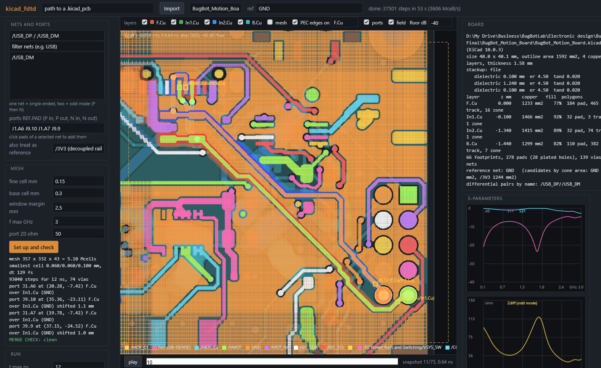
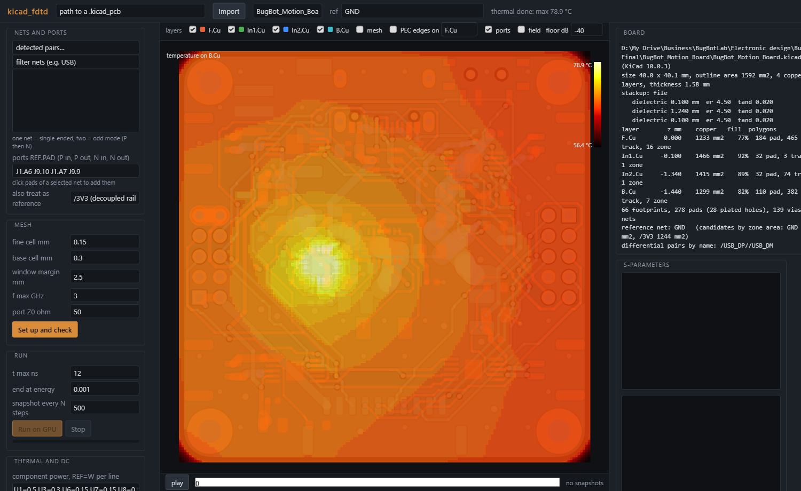

Exact copper in. Impedance, S-parameters, temperature and IR drop out. Every mesh edge's owner is on screen, and it refuses to solve a model it cannot trust. Python, NumPy and CuPy on an ordinary gaming GPU.

Pick one net or a differential pair and the pads that end it. The tool sites lumped ports on the right copper, meshes the pair and its neighbours finely, assigns every Yee edge to a conductor by an exact polygon test, and runs a Yee FDTD with CPML boundaries. Out come S11, S21, Zin or Zdiff, and a field animation along the trace.
Give it component powers and a convection coefficient: a finite-volume heat solve over the whole board, copper layers as sheets scaled by their copper fraction, via barrels through the planes. Add a DC net with source and sink pads for the IR drop, the current density per cell and the Joule heat, which feeds back into the temperature.
One command reports size, stackup (read from the file, or a flagged FR4 default), copper area and fill per layer, footprint, pad, via and net counts, the reference net it will use, and the differential pairs it recognises by name.

git clone https://github.com/Jerome-Graves/kicad_fdtd cd kicad_fdtd python -m venv venv && venv\Scripts\activate pip install -e .[gpu] kicad-fdtd stats my_board.kicad_pcb kicad-fdtd pair my_board.kicad_pcb /USB_DP /USB_DM --ports J1.A6 U5.1 J1.A7 U5.3 kicad-fdtd thermal my_board.kicad_pcb --power U1=0.5 U3=0.3 --net /3V3 --from U3.4 --to J8.1 --current 1 kicad-fdtd gui
KiCad 7 or later must be installed: the exporter runs inside KiCad's own Python, found automatically. Without a CUDA GPU add --cpu; the NumPy path is the same physics, about a hundred times slower.
KiCad's own geometry engine gives exact polygons for pads, tracks, zone fills and vias, plus the stackup. Nothing is rasterised until it reaches the mesh, and there each edge midpoint is tested against the real polygons.
Six fused CuPy kernels per time step carry the curl, the CPML and the lumped ports. Port voltages and currents are read by one more kernel and stay on the device, so a step is close to the memory-bandwidth floor of the GPU.
| Case | kicad_fdtd | Reference |
|---|---|---|
| 0.2 mm microstrip over 0.1 mm FR4, 50 Ω ports | S21 −0.06 dB, S11 −18.6 dB, Zin 42 Ω | openEMS 43 Ω, 2D cross-section 45 Ω |
| USB pair on a 4-layer board, 0.15 mm and 0.1 mm meshes | Zdiff 58 Ω and 60 Ω | 2D cross-section 66 Ω |
| Fused kernels vs slice reference vs pre-fusion code | same step count, S-parameters equal to 1e-6 dB | |
| Copper-clad plate, 1 W, h = 10 W/m²K both faces | mean rise 319.6 K | P / (2hA) = 312.5 K |
| 0.2 mm × 35 µm track, 1 A over 11.4 mm | 27.7 mV | ρL / (wt) = 27.4 mV |
| 4-layer 40 mm board, 1.4 W, natural convection | mean rise 44 K, 79 °C at the charger | P / (2hA) = 44 K |